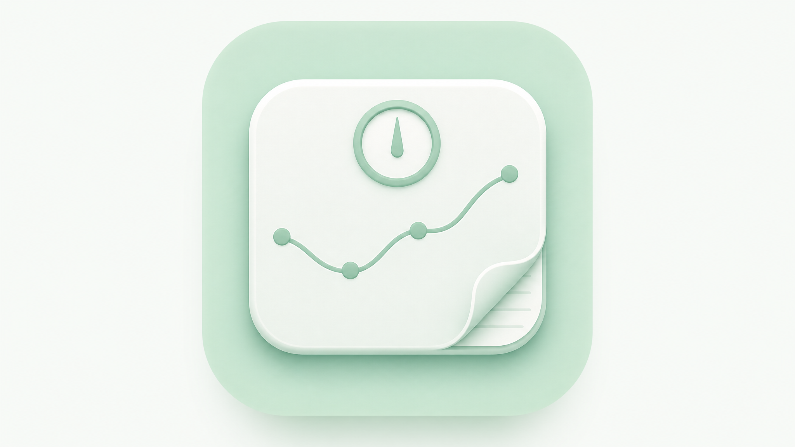
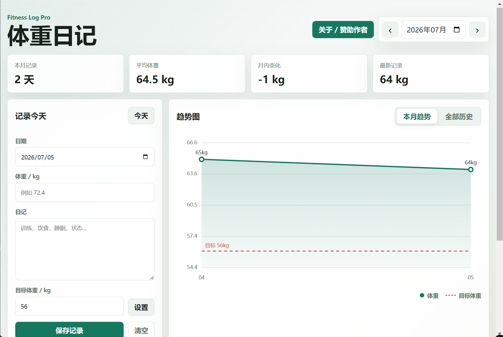
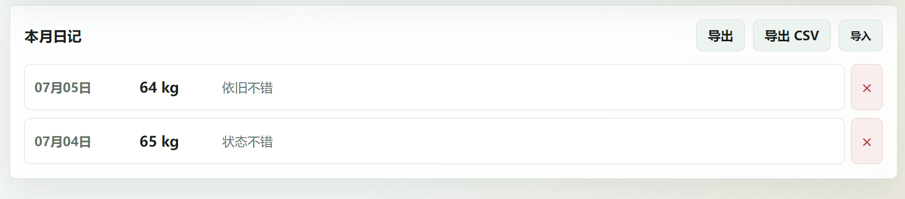
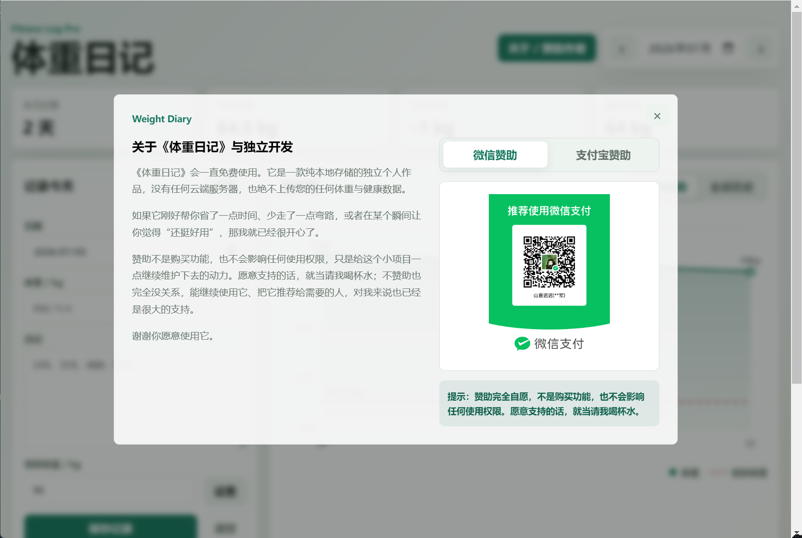

每日体重与日记
记录体重、训练、饮食、睡眠和当天状态。简单输入，方便长期坚持。

体重日记
Features
记录体重、训练、饮食、睡眠和当天状态。简单输入，方便长期坚持。
既能看本月变化，也能拉通查看全部历史记录，体重变化更直观。
设置目标体重后，趋势图中会显示清晰的水平参考线，帮助你观察距离。
支持导出 CSV 和 JSON。无论换电脑、备份还是二次分析，数据都能带走。
Privacy First
体重、日记和目标体重都保存在本机。软件不要求登录，不依赖服务器，不收集你的健康数据。你可以定期导出备份，自己掌控所有记录。
不上传体重数据
不上传日记文本
不要求注册账号
不设置付费功能墙
Screenshots


Download
软件会一直免费使用。赞助不是购买功能，也不会影响任何使用权限。能继续使用它、把它推荐给需要的人，对作者来说也已经是很大的支持。